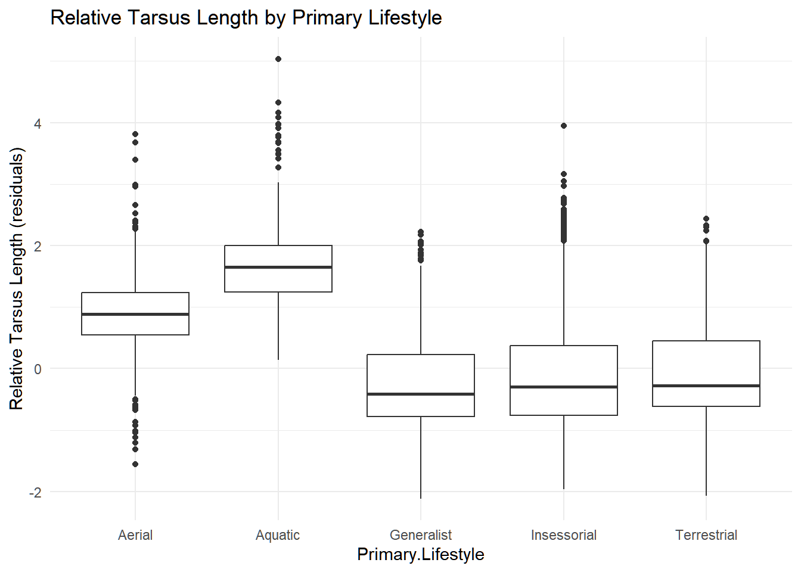

Rows: 11009 Columns: 37
── Column specification ────────────────────────────────────────────────────────
Delimiter: ","
chr (13): Species1, Family1, Order1, Avibase.ID1, Mass.Source, Mass.Refs.Oth...
dbl (24): Sequence, Total.individuals, Female, Male, Unknown, Complete.measu...
ℹ Use `spec()` to retrieve the full column specification for this data.
ℹ Specify the column types or set `show_col_types = FALSE` to quiet this message.
Data source:
Tobias JA, et al. (2022). AVONET: Morphological, ecological and geographical data for all birds. Ecology Letters 25: 581–597.
Winnow the dataset to include only the following variables: Species1, Family1, Order1, Beak.Length_Culmen, Beak.Width, Beak.Depth, Tarsus.Length, Wing.Length, Tail.Length, Mass, Habitat, Migration, Trophic.Level, Trophic.Niche, Min.Latitude, Max.Latitude, Centroid.Latitude, Primary.Lifestyle, and Range.Size
Do a bit of exploratory data analysis with this dataset, e.g., using the {skimr} package. Which of the variables are categorical and which are numeric?
Upon utilizing the skim() function, we can analyze that the numeric variables are those which we can find summary statistics for that are output within the table
1
Beak.Length_Culmen
0
1.0000000
2.636346e+01
2.438601e+01
2
Beak.Width
0
1.0000000
6.578545e+00
5.148234e+00
3
Beak.Depth
0
1.0000000
8.060205e+00
7.585840e+00
4
Tarsus.Length
0
1.0000000
2.873362e+01
2.484441e+01
5
Wing.Length
0
1.0000000
1.247826e+02
9.343607e+01
6
Tail.Length
0
1.0000000
8.665216e+01
6.108081e+01
7
Mass
0
1.0000000
2.671472e+02
1.883035e+03
8
Migration
23
0.9979108
1.288367e+00
6.202803e-01
9
Min.Latitude
57
0.9948224
-6.439430e+00
2.236939e+01
10
Max.Latitude
57
0.9948224
1.150653e+01
2.331511e+01
Challenge 1
One-Factor ANOVA and Interference
Step 1
Make boxplots of log(Mass) in relation to Trophic.Level and Migration behavior type. For each plot, drop from the visualization all species records where the categorical variable of interest is missing from the dataset. Also, you will want to convert the variable Migration (which is scored as a number: “1”, “2”, or “3”) from class numeric to either being classified as a factor or as a character (string) variable.
avonet <- avonet |>mutate(Migration =as.factor(Migration)) |>filter(!is.na(Trophic.Level)) |>filter(!is.na(Migration)) |>filter(!is.na(Trophic.Niche))ggplot(data = avonet, aes(x = Trophic.Level, y =log(Mass))) +geom_boxplot() +labs(title ="Boxplot of log(Mass) by Trophic Level",x ="Trophic Level",y ="log(Mass)" )
ggplot(data = avonet, aes(x = Migration, y =log(Mass))) +geom_boxplot() +labs(title ="Boxplot of log(Mass) by Migration",x ="Migration",y ="log(Mass)" )
Step 2
Run linear models using the lm() function to look at the relationship between log(Mass) and Trophic.Level and between log(Mass) and Migration.
Examine the output of the resultant linear models. Is log(Mass) associated with either Trophic.Level or Migration category? That is, in the global test of significance, is the F statistic large enough to reject the null hypothesis of an F value of zero?
Given the regression coefficients returned for your Migration model, which Migration categor(ies) are different than the reference level? What level is the reference level? Relevel and assess differences among the remaining pair of Migration categories.
Call:
lm(formula = log(Mass) ~ Migration, data = filter(avonet, !is.na(Migration)))
Residuals:
Min 1Q Median 3Q Max
-3.8924 -1.1774 -0.3084 0.9136 7.8432
Coefficients:
Estimate Std. Error t value Pr(>|t|)
(Intercept) 3.77412 0.01637 230.58 < 2e-16 ***
Migration2 0.76016 0.04732 16.07 < 2e-16 ***
Migration3 0.37692 0.05156 7.31 2.86e-13 ***
---
Signif. codes: 0 '***' 0.001 '**' 0.01 '*' 0.05 '.' 0.1 ' ' 1
Residual standard error: 1.535 on 10978 degrees of freedom
Multiple R-squared: 0.02567, Adjusted R-squared: 0.02549
F-statistic: 144.6 on 2 and 10978 DF, p-value: < 2.2e-16
The F-statistic of the log(Mass) ~ Trophic.Level and log(Mass) ~ Migration models both have
p-value: < 2.2e-16
This indicates that there is a significant relationship when log(Mass) is regressed across different migratory categories and trophic levels. Furthermore, based on the associated p-values for the Migration 2 and Migration 3 categories, their appears to be a significant different when compared against the reference level (Migration 1) for differences in log(Mass).
Step 3
Conduct a post-hoc Turkey Honest Significant Differences test to also evaluate which Migration categories differ “significantly” from one another (see Module 20)
aov <-aov(data = avonet, log(Mass) ~ Migration)posthoc <-TukeyHSD(aov, which ="Migration")posthoc
Tukey multiple comparisons of means
95% family-wise confidence level
Fit: aov(formula = log(Mass) ~ Migration, data = avonet)
$Migration
diff lwr upr p adj
2-1 0.7601622 0.6492503 0.8710742 0
3-1 0.3769249 0.2560616 0.4977882 0
3-2 -0.3832374 -0.5380450 -0.2284297 0
Step 4
Use a permutation approach to inference to generate a null distribution of F statistic values for the model of log(Mass) in relation to Trophic.Level and calculate a p value for your original F statistic. You can do this either by programming your own permutation test (e.g., by shuffling values for the predictor or response variable among observations and calculating an F statistic for each replicate) or by using the {infer} workflow and setting calculate(stat="F").
Warning: Please be cautious in reporting a p-value of 0. This result is an approximation
based on the number of `reps` chosen in the `generate()` step.
ℹ See `get_p_value()` (`?infer::get_p_value()`) for more information.
obs_F
Response: logMass (numeric)
Explanatory: Trophic.Level (factor)
# A tibble: 1 × 1
stat
<dbl>
1 78.2
p_val
# A tibble: 1 × 1
p_value
<dbl>
1 0
Challenge 2
Step 1
Create the following two new variables and add them to AVONET dataset:
Relative beak length, which you should calculate as the residual of log(Beak.Length_Culmen) on log(Mass).
Relative tarsus length, which you should calculate as the residual of log(Tarsus.Length) on log(Mass).
Make a boxplot or violin plot of your new relative tarsus length variable in relation to Primary.Lifestyle and of your new relative beak length variable in relation to Trophic.Niche
# Plot 1: Boxplot of Relative Tarsus Length by Primary Lifestylep_box_tarsus <-ggplot(data = avonet_mod , aes(x = Primary.Lifestyle, y = Tarsus.Length_rel)) +geom_boxplot() +labs( title ="Relative Tarsus Length by Primary Lifestyle",y ="Relative Tarsus Length (residuals)") +theme_minimal()# Plot 2: Violin plot of Relative Tarsus Length by Primary Lifestylep_violin_tarsus <-ggplot(data = avonet_mod, aes(x = Primary.Lifestyle, y = Tarsus.Length_rel)) +geom_violin(trim =FALSE) +labs( title ="Relative Tarsus Length by Primary Lifestyle",y ="Relative Tarsus Length (residuals)") +theme_minimal()# Plot 3: Boxplot of Relative Beak Length by Trophic Nichep_box_beak <-ggplot(data = avonet_mod, aes(x = Trophic.Niche, y = Beak.Length_rel)) +geom_boxplot() +labs( title ="Relative Beak Length by Trophic Niche",y ="Relative Beak Length (residuals)") +theme_minimal()# Plot 4: Violin plot of Relative Beak Length by Trophic Nichep_violin_beak <-ggplot(data = avonet_mod, aes(x = Trophic.Niche, y = Beak.Length_rel)) +geom_violin(trim =FALSE) +labs( title ="Relative Beak Length by Trophic Niche",y ="Relative Beak Length (residuals)") +theme_minimal()p_box_tarsus

p_violin_tarsus
p_box_beak
p_violin_beak
Step 3
Run ANOVA analyses to look at the association between geographic range size and the variable Migration. You should first drop those observations for which Migration is not scored and also look at the distribution of the variable Range.Size to decide whether and how it might need to be transformed. Based on the global model, is range size associated with form of migration? How much of the variance in your measure of range size is associated with Migration behavior style?
Given the regression coefficients returned in the output of the model, which Migration categor(ies) are different than the reference level? What level is the reference level? Relevel and assess differences among the remaining pair of Migration categories. Also conduct a post-hoc Tukey Honest Significant Differences test to also evaluate which Migration categories differ "significantly" from one another (see Module 20).
# Analyzing Distribution of Range.Sizeggplot(data = avonet_mod, aes(x = Range.Size)) +geom_histogram(fill ="lightblue", color ="black") +labs(title ="Distribution of Range.Size")
`stat_bin()` using `bins = 30`. Pick better value with `binwidth`.
Warning: Removed 49 rows containing non-finite outside the scale range
(`stat_bin()`).
avonet_mod <- avonet_mod |>mutate(Range.Size_log =log(Range.Size))ggplot(data = avonet_mod, aes(x = Range.Size_log)) +geom_histogram(fill ="lightgreen", color ="black") +labs("Distribution of log(Range.Size")
`stat_bin()` using `bins = 30`. Pick better value with `binwidth`.
Warning: Removed 49 rows containing non-finite outside the scale range
(`stat_bin()`).
The log(Range.Size) produces a left-skewed normal distribution
# Linear model Testing the Log-transformed Range Sizem <-lm(data = avonet_mod, Range.Size_log ~ Migration)m.aov <-Anova(m, formula = Range.Size_log ~ Migration)m.aov
Anova Table (Type II tests)
Response: Range.Size_log
Sum Sq Df F value Pr(>F)
Migration 8047 2 519.5 < 2.2e-16 ***
Residuals 84643 10929
---
Signif. codes: 0 '***' 0.001 '**' 0.01 '*' 0.05 '.' 0.1 ' ' 1
Tukey multiple comparisons of means
95% family-wise confidence level
Fit: aov(formula = Range.Size_log ~ Migration, data = avonet_mod)
$Migration
diff lwr upr p adj
2-1 1.7815741 1.5799679 1.983180 0
3-1 2.5139007 2.2941790 2.733622 0
3-2 0.7323266 0.4508827 1.013771 0
Residual standard error: 2.783 on 10929 degrees of freedom
(49 observations effacées parce que manquantes)
Multiple R-squared: 0.08681, Adjusted R-squared: 0.08665
F-statistic: 519.5 on 2 and 10929 DF,
p-value: < 2.2e-16
Global F-statistic and its p-value test test whether Migration as a whole is associated with log(Range.Size)
The adjusted R square indicates the proportion of variance explained by log(Range.Size). In our model, our adjusted R square doesn’t seem to be due to chance given the similarity to the Multiple R-Squared
For the associated regression summary, we find that there is very low explanation (about8.7%) of the proportion of model variance by the relationship between Migration and log(Range.Size), but that there is a significant relationship between Migration and log(Range.Size) for the variance which the model does explain
Step 4
Winnow your original data to just consider birds from the Infraorder "Passeriformes" (song birds).
Run separate one-factor ANOVA analyses to look at the association between [1] relative beak length and Primary.Lifestyle and between [2] relative beak length and Trophic.Level. In doing so…
Make boxplots of response variable by each predictor and by the combination of predictors.
Run linear models for each predictor separately and interpret the model output.
# Winnowing of avonet_mod into avonet_passeriformesavonet_passeriformes <- avonet_mod |>filter(Order1 =="Passeriformes")# View(avonet_passeriformes)# Linear Model: Relative Beak Legnth and Primary Lifestyle m.passeriformes.1<-lm(data = avonet_passeriformes, Beak.Length_rel ~ Primary.Lifestyle)summary(m.passeriformes.1)
Call:
lm(formula = Beak.Length_rel ~ Primary.Lifestyle, data = avonet_passeriformes)
Residuals:
Min 1Q Median 3Q Max
-2.56437 -0.25202 0.02736 0.28720 1.86009
Coefficients:
Estimate Std. Error t value Pr(>|t|)
(Intercept) 0.37895 0.04751 7.976 1.76e-15 ***
Primary.LifestyleGeneralist -0.45199 0.05074 -8.907 < 2e-16 ***
Primary.LifestyleInsessorial -0.71814 0.04801 -14.957 < 2e-16 ***
Primary.LifestyleTerrestrial -0.37763 0.04948 -7.631 2.65e-14 ***
---
Signif. codes: 0 '***' 0.001 '**' 0.01 '*' 0.05 '.' 0.1 ' ' 1
Residual standard error: 0.4727 on 6602 degrees of freedom
Multiple R-squared: 0.1039, Adjusted R-squared: 0.1035
F-statistic: 255.2 on 3 and 6602 DF, p-value: < 2.2e-16
aov.passeriformes.1<-Anova(m.passeriformes.1, formula = Beak.Length_rel ~ Primary.Lifestyle)aov.passeriformes.1
Anova Table (Type II tests)
Response: Beak.Length_rel
Sum Sq Df F value Pr(>F)
Primary.Lifestyle 171.06 3 255.18 < 2.2e-16 ***
Residuals 1475.25 6602
---
Signif. codes: 0 '***' 0.001 '**' 0.01 '*' 0.05 '.' 0.1 ' ' 1
# Combination Plots: Relative Beak Length by the Combination of Primary Lifestyle and Trophic Levelggplot(data = avonet_passeriformes, aes(x =interaction(Primary.Lifestyle, Trophic.Level, sep =" - "), y = Beak.Length_rel)) +geom_boxplot(fill ="lavender") +labs(title ="Relative Relative Beak Length by Primary Lifestyle and Trophic Level",x ="Primary Lifestyle - Trophic Level",y ="Relative Beak Length") +theme(axis.text.x =element_text(angle =45, hjust =1, size =8))
Step 5
Run a two-factor model to look at the association between relative beak length and both Primary.Lifestyle and Trophic.Level among the passeriforms. Based on the model output, what would you conclude about how relative beak length is related to these two variables?
Call:
lm(formula = Beak.Length_rel ~ Primary.Lifestyle + Trophic.Level,
data = avonet_passeriformes)
Residuals:
Min 1Q Median 3Q Max
-2.60870 -0.21491 0.03277 0.27078 1.63411
Coefficients:
Estimate Std. Error t value Pr(>|t|)
(Intercept) 0.37895 0.04571 8.290 <2e-16 ***
Primary.LifestyleGeneralist -0.56913 0.04923 -11.561 <2e-16 ***
Primary.LifestyleInsessorial -0.81473 0.04644 -17.543 <2e-16 ***
Primary.LifestyleTerrestrial -0.47335 0.04784 -9.894 <2e-16 ***
Trophic.LevelHerbivore 0.33304 0.01468 22.694 <2e-16 ***
Trophic.LevelOmnivore 0.14091 0.01401 10.058 <2e-16 ***
---
Signif. codes: 0 '***' 0.001 '**' 0.01 '*' 0.05 '.' 0.1 ' ' 1
Residual standard error: 0.4548 on 6600 degrees of freedom
Multiple R-squared: 0.1706, Adjusted R-squared: 0.17
F-statistic: 271.6 on 5 and 6600 DF, p-value: < 2.2e-16
Overall Model Significance
- The global F-statistic is **highly significant, however the adjusted R-squared value is quite low** (**about 17%**) indicating that for the two-variable model, the variance explained by regression model is rather low so *Primary.Lifestyle* and *Trophic.Level* are poorly explained by the *relative Beak Length*.
Step 6
Finally, run an additional two-way model with the same dataset and predictors, but adding the possibility of an interaction term. To do this, you should modify your model formula using the colon operator (:) to specify the interaction, e.g., relative beak length ~ Primary.Lifestyle + Trophic.Level + Primary.Lifestyle:Trophic.Level. Based on the model output, what would you now conclude about how relative beak length is related to these two variables?
Call:
lm(formula = Beak.Length_rel ~ Primary.Lifestyle + Trophic.Level +
Primary.Lifestyle:Trophic.Level, data = avonet_passeriformes)
Residuals:
Min 1Q Median 3Q Max
-2.56447 -0.21133 0.03044 0.26742 1.65344
Coefficients: (2 not defined because of singularities)
Estimate Std. Error
(Intercept) 0.378953 0.045583
Primary.LifestyleGeneralist -0.612236 0.052179
Primary.LifestyleInsessorial -0.804704 0.046409
Primary.LifestyleTerrestrial -0.492672 0.048730
Trophic.LevelHerbivore 0.316904 0.034291
Trophic.LevelOmnivore 0.250981 0.034022
Primary.LifestyleGeneralist:Trophic.LevelHerbivore -0.004805 0.056746
Primary.LifestyleInsessorial:Trophic.LevelHerbivore 0.025451 0.038424
Primary.LifestyleTerrestrial:Trophic.LevelHerbivore NA NA
Primary.LifestyleGeneralist:Trophic.LevelOmnivore 0.030777 0.051675
Primary.LifestyleInsessorial:Trophic.LevelOmnivore -0.164327 0.037899
Primary.LifestyleTerrestrial:Trophic.LevelOmnivore NA NA
t value Pr(>|t|)
(Intercept) 8.313 < 2e-16 ***
Primary.LifestyleGeneralist -11.733 < 2e-16 ***
Primary.LifestyleInsessorial -17.339 < 2e-16 ***
Primary.LifestyleTerrestrial -10.110 < 2e-16 ***
Trophic.LevelHerbivore 9.241 < 2e-16 ***
Trophic.LevelOmnivore 7.377 1.82e-13 ***
Primary.LifestyleGeneralist:Trophic.LevelHerbivore -0.085 0.933
Primary.LifestyleInsessorial:Trophic.LevelHerbivore 0.662 0.508
Primary.LifestyleTerrestrial:Trophic.LevelHerbivore NA NA
Primary.LifestyleGeneralist:Trophic.LevelOmnivore 0.596 0.551
Primary.LifestyleInsessorial:Trophic.LevelOmnivore -4.336 1.47e-05 ***
Primary.LifestyleTerrestrial:Trophic.LevelOmnivore NA NA
---
Signif. codes: 0 '***' 0.001 '**' 0.01 '*' 0.05 '.' 0.1 ' ' 1
Residual standard error: 0.4535 on 6596 degrees of freedom
Multiple R-squared: 0.1758, Adjusted R-squared: 0.1747
F-statistic: 156.4 on 9 and 6596 DF, p-value: < 2.2e-16
Both Primary.Lifestyle and Trophic.Level are significantlyexplained by the model that includes interaction, however, there is a lowamount of variance explained by the model (about 17%) even when including the interaction term. Based on the relationships present within the combined interacting-term summary, Primary.Lifestyle and Trophic.Level share a very significant relationship ( p-value < 2e-16) with the relative beak length in all cases. For the interaction term, only Primary.LifestyleInsessorial:Trophic.LevelOmnivore shows a significant relationship, with a p = 1.47e-0.5.
Step 7
Use the interaction.plot() function to visualize the interaction between Primary.Lifestyle and Trophic.Level (see Module 20).
In the exercise above, we really did not do any checking with this dataset to see if the data meet the primary assumptions for standard linear regression and ANOVA, which are that variables/residuals within each grouping level are roughly normally distributed and have roughly equal variances. Sample sizes within each grouping level should also be roughly equal. As noted in Module 20, a general rule of thumb for "equal" variances is to compare the largest and smallest within-grouping level standard deviations and, if this value is less than 2, then it is often reasonable to presume the assumption may not be violated.
Use this approach to see whether variances in across groups in your various models (e.g., for relative beak length ~ trophic level) are roughly equal. Additionally, do a visual check of whether observations and model residuals within groups look to be normally distributed.
# Distribution of Samples across Trophic Leveltable(avonet_passeriformes$Trophic.Level)
Carnivore Herbivore Omnivore
3819 1297 1490
# Compute Standard Deviation across Trophic Levelgroup_sd <- avonet_passeriformes |>group_by(Trophic.Level) |>summarise(sd_obs =sd(Beak.Length_rel, na.rm =TRUE),n =n())group_sd
# Observed Values by Trophic Levelggplot(avonet_passeriformes, aes(x = Beak.Length_rel)) +geom_histogram(fill ="lightblue", color ="black") +facet_wrap(~ Trophic.Level) +labs(title ="Histogram of Relative Beak Length by Trophic Level",x ="Relative Beak Length",y ="Frequency") +theme_minimal()
`stat_bin()` using `bins = 30`. Pick better value with `binwidth`.
# Q-Q plots of residuals by Trophic.Levelggplot(avonet_passeriformes, aes(sample = resid_model)) +stat_qq() +stat_qq_line() +facet_wrap(~ Trophic.Level) +labs(title ="Q-Q Plot of Model Residuals by Trophic Level") +theme_minimal()
# Histograms of residuals by Trophic.Levelggplot(avonet_passeriformes, aes(x = resid_model)) +geom_histogram(bins =30, fill ="lightgreen", color ="black") +facet_wrap(~ Trophic.Level) +labs(title ="Histogram of Model Residuals by Trophic Level",x ="Residuals",y ="Frequency") +theme_minimal()
Based on Q-Q plots, the data is mostly normally distributed with equivariance throughout its inner quartiles, however, the outer quartiles are more disorderly, especially in the first quartile which contains much less variance. This aligns with a cursory visual inspection, which indicates that the graphs are slightly left skewed.